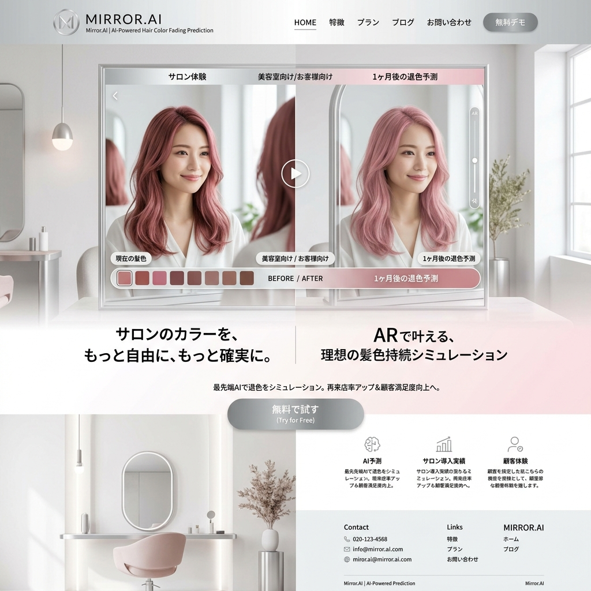

来年の「流行色」は、
街角のピクセルが知っている。
アパレル業界の在庫ロスを根絶する。COLOR-PREDICT AIは、世界中のストリートスナップ、SNSの画像データ、さらには政治経済のセンチメントを解析し、半年後にバズるトレンドカラーとシルエットをミリ単位で予測する究極のファッションOS。

年間数十億着が捨てられる「勘」のビジネス
ファッション業界の企画は、未だに少数のトップデザイナーやバイヤーの「直感」に依存しています。その結果生み出される「外れたトレンド」は、膨大な売れ残りと大量廃棄という深刻な環境問題、そして企業の巨大な利益圧迫を引き起こしています。
世界中の画像を喰い尽くすビジョンAI
ストリート・ディープラーニング
渋谷、NY、パリ、ソウル。世界主要都市の定点カメラやInstagramの数億枚の画像から、通行人の服の「色相」「彩度」「シルエット」をAIがリアルタイムに抽出・定量化。
マクロ感情指数（Social Sentiment）
「不景気の時はスカートの丈が長くなり、暗い色が流行る」という経験則をデータ化。政治不安や経済指標のニューステキストを解析し、大衆の潜在的な心理状態をトレンド予測に組み込みます。
生地・素材のマイクロトレンド検知
単なる色だけでなく、「ツヤのある素材（サテン）」か「マットな素材（リネン）」かといった質感（テクスチャ）の流行の兆しすら、画像の光の反射率から解析します。
「半年後のピンポイントなRGB値」を提示
「来年はピンクが流行る」といった曖昧な情報ではありません。COLOR-PREDICT AIは、「今年の秋、アジア市場のZ世代において、HEX:#FF69B4（ホットピンク）のアウターの需要が前年比で210%増加する」といった、生産ラインに直結する超具体的な数値を出力します。
サプライチェーンとのシームレスな統合
予測されたトレンドは、そのまま提携する生地メーカーの在庫システムや、縫製工場の空きラインとAPI連携。企画から生地の調達、生産開始までのタイムラグを極限まで短縮し、「今、最も求められている服」を最速で市場に投下します。
Case Study | 大手ファストファッションブランド
常に大量の在庫処分に悩まされていたグローバルブランド。一部のウィメンズラインの企画をCOLOR-PREDICT AIに完全委譲。AIが予測した「アースカラーのフレアパンツ」を主力にした結果、プロパー消化率（定価での販売率）が劇的に改善し、廃棄コストを年間12億円削減しました。
データが織りなす、サステナブルな美
私たちはクリエイティビティを否定しません。AIは「何を何枚作るべきか」という正解を出し、デザイナーはそのキャンバスの上で「どう美しく見せるか」に集中する。これが次世代のアパレル産業の最適解です。